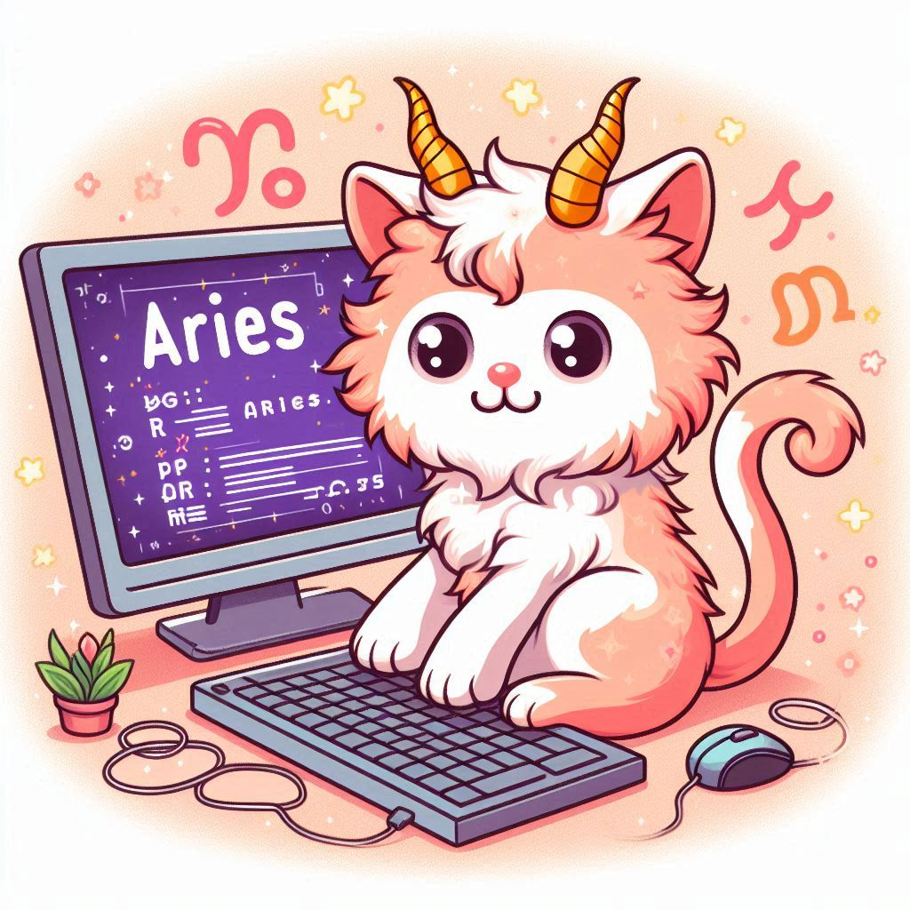

This month brings a whirlwind of opportunities and challenges for Aries girls who are passionate
about coding. Your natural enthusiasm and determination will drive you to take on new projects and
learn new programming languages. Expect to face some complex problems, but remember that these
obstacles are just stepping stones towards your growth as a coder. Trust your instincts and don’t be
afraid to ask for help when you need it.
As the stars align, you'll find yourself more motivated than ever to dive into your coding endeavors.
Whether you're debugging tricky issues or perfecting your latest project, your persistence will pay
off. This is a great time to showcase your skills and prove to yourself just how capable you are.
Keep pushing forward, and you’ll be amazed at what you can achieve.
Learning and Development
Your thirst for knowledge is at an all-time high. This month, focus on enhancing your skills in a new
programming language or framework. Consider enrolling in an online course or attending a coding workshop
to expand your expertise. Collaborative projects will also be beneficial, so look for opportunities to
work with other coders. Sharing knowledge and learning from others will accelerate your growth.
Personal Growth
Balancing coding with personal well-being is crucial. Take breaks when needed and engage in activities
that recharge your energy. Aerial arts and yoga can provide the perfect counterbalance to your intense
coding sessions. Remember, a healthy mind and body will make you a more effective and creative coder.
Reflect on your progress regularly and set realistic goals to stay motivated.
Career
Your career is on an upward trajectory this month. Your hard work and dedication to coding are being
noticed by peers and superiors alike. This is a great time to take on leadership roles or mentor others
in your team. Your innovative ideas will shine, and you might even be presented with new opportunities
for advancement. Stay confident and continue to showcase your abilities.
Lucky days for coding: 5th, 14th, 23rd
Power color: Electric Blue
Embrace the challenges and opportunities that come your way this month, and let your coding skills shine
bright!